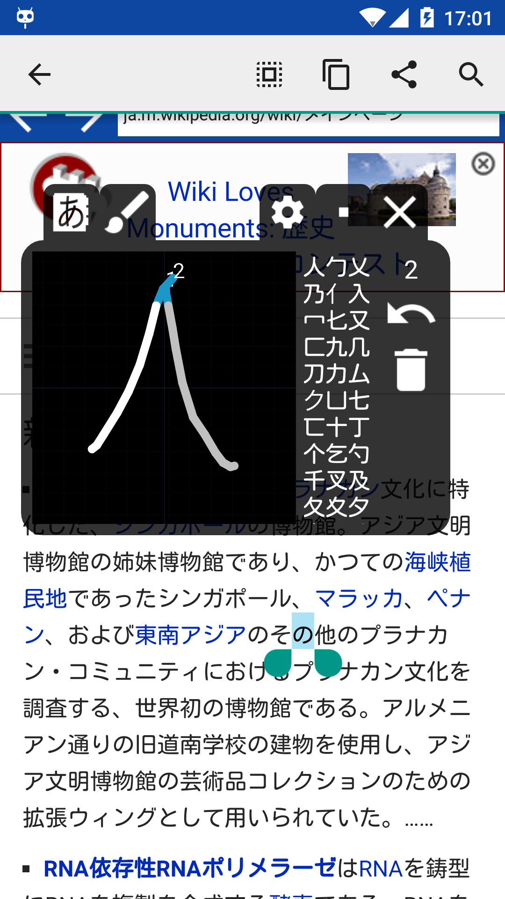

Aedict Reader Popup
Every app has a dictionary now.

Customer Experience
What a great idea! Highlight the Japanese word (s), copy to the clipboard, and voila...Aedict provides the English translation. One more tap, and you get the pronunciation + an intuitive menu of further options.
Bob Dobbs
Spectacular addition! When I am using a dictionary, 90% of the time it is to look up a word in a webpage or document. This app is instantly available and is going to save a huge amount of time switching applications.
Christopher Bull
Good App, but need high horse power CPU.
Kajohn Rojanametin
Aedict Reader Popup tutorial
What is Aedict Reader Popup?

Your Dictionary Companion
Open any application which shows Japanese text, select some text and copy it into the Android clipboard - the Popup will immediately hover over the application and will translate the text on-the-fly.

Easy to control
Touch the popup to enlarge, showing more detail. Swipe the popup to the right, to iconify and take as small space as possible.

More Search Modes
If you cannot copy the text from the application (for example when watching a movie or playing a game), just switch the Popup to a classic search-by-typing. You can also spell the sentence, by using the built-in voice search.
You can also switch the Popup to a Kanji Pad form,

Floating Kanjipad
You can also switch the Popup to a Kanji Pad form, to try to search particular kanji by drawing.
Features
- Hovers over any application, game, a movie player, ...
- Allows you to search by typing, by drawing and by speaking